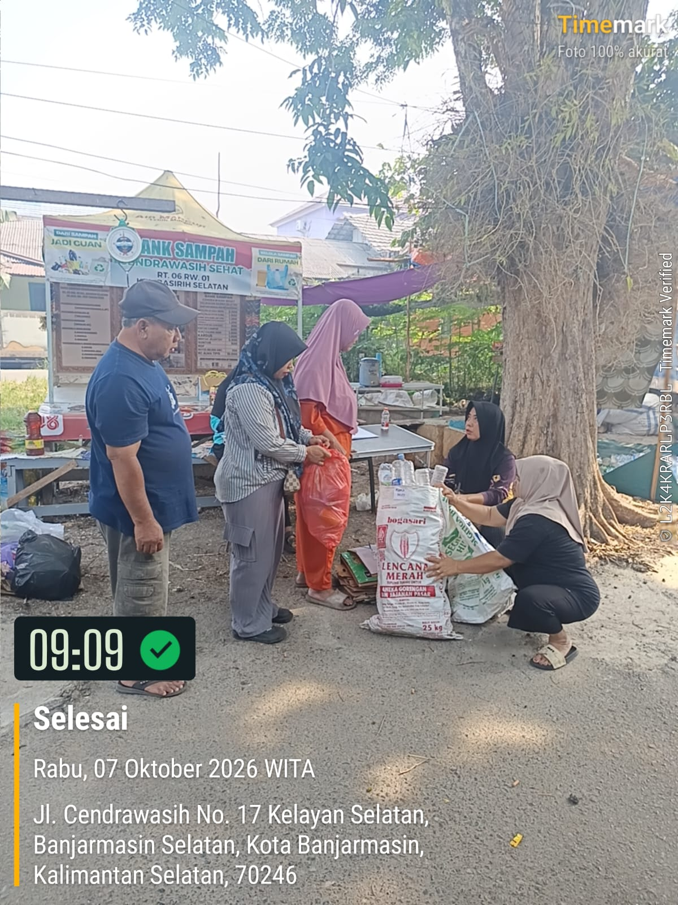
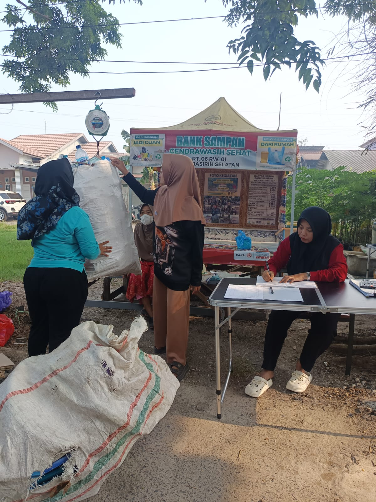
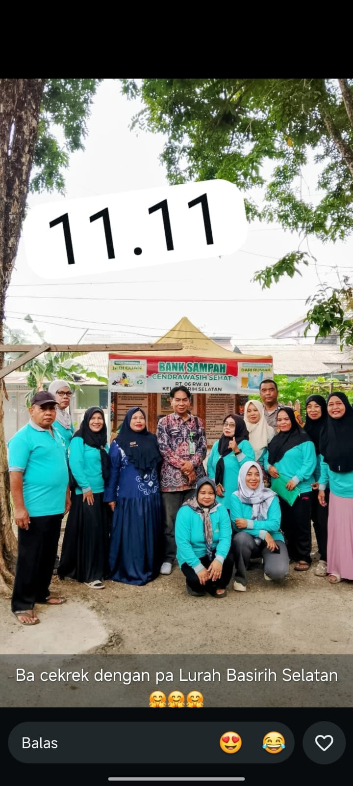

Wadah pemilahan dan pengelolaan sampah anorganik warga untuk lingkungan yang lebih sehat dan berdaya.
Cek Harga Sampah Hari IniBank Sampah Cendrawasih Sehat berfokus pada edukasi pemilahan sampah dari rumah tangga (3R: Reduce, Reuse, Recycle) serta pengolahan sampah anorganik menjadi tabungan bernilai ekonomis bagi warga sekitar.
3R
Reduce • Reuse • Recycle
Harga dapat berubah sesuai kondisi pasar daur ulang (Update berkala)
| Kategori Sampah | Jenis / Keterangan | Estimasi Harga / kg |
|---|---|---|
| Plastik | Botol PET Bening (Bersih/Tanpa Tutup) | Rp 3.000 / kg |
| Plastik | Gelas Plastik / Bodongan Campur | Rp 2.000 / kg |
| Kertas & Karton | Kardus Cokelat / HVS Bekas | Rp 1.800 / kg |
| Logam | Besi Tebal / Kaleng Aluminium | Rp 4.000 / kg |
| Minyak | Minyak Jelantah (Minyak Goreng Bekas) | Rp 6.000 / Liter |

Penimbangan dan pencatatan tabungan sampah rutin tiap akhir pekan.

Pengurus dan kader kebersihan lingkungan yang siap melayani warga.

Pengepakan sampah anorganik sebelum didistribusikan ke lapak daur ulang.